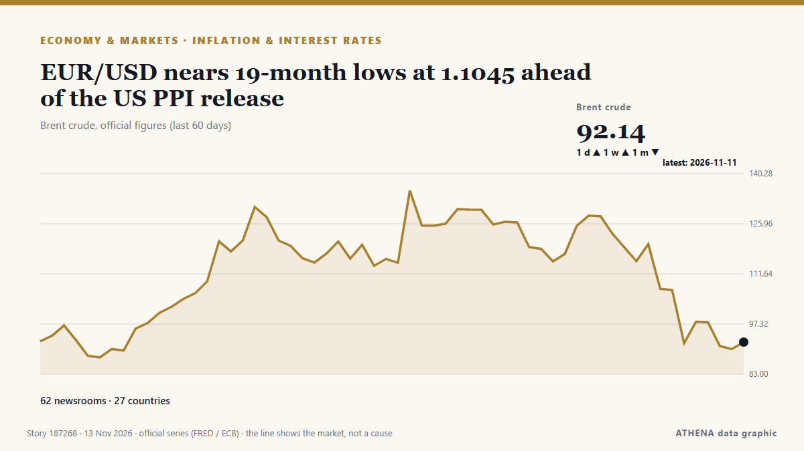

EUR/USD nears 19-month lows at 1.1045 ahead of the US PPI release

Relayé de façon indépendante par 62 médias dans 26 pays depuis le 7 nov. ; premier à l'annoncer : Taipei Times ; la couverture faiblit. ATHENA juge le risque modéré (2.8/10), surtout en raison de la gravité des dommages décrits et de sa portée géographique et sectorielle. La confiance est de 85 % (élevée) : 62 médias indépendants le confirment, avec une fiabilité moyenne des sources de 72 %. Médias par pays : Espagne (17), Inde (3), États-Unis (2). Couverture : du 7 nov. au 9 nov., 47 heures.
Pourquoi c'est important: Les banques centrales fixent le prix de l'argent ; leurs décisions font bouger devises, obligations, crédits immobiliers et bourses dans le monde.
Ce qui a changé : 71 nouveaux articles de 16 rédactions dans les 24 heures jusqu'au 13 nov..
Premier titre : Morning briefing: EUR/USD may trade within 1.1100–1.1250
Les titres sont affichés en anglais, tels que publiés.
Comment lire cette page
- Ce que vous lisez
- 62 médias dans 26 pays ont rapporté cet événement. Les reportages ci-dessous sont classés selon leur ordre de parution ; chaque titre ouvre l'article original. ATHENA n'écrit aucun reportage.
- Notre lecture
- Pour mémoire — Les reportages décrivent une affaire terminée, intérieure, commerciale ou personnelle. Nous la consignons pour que vous voyiez qui l'a rapportée et quand. Nous ne suivons pas ici de risque de conflit plus large.
- Quelle base de preuves
- Limitée Considérez cette page comme un premier compte rendu.
Après retrait des doublons, des éléments hors sujet et périmés, 2 des 34 reportages listés sont retenus ; 6 % des titres correspondent à l'événement.
- Ce que cela ne veut pas dire
- ATHENA mesure la façon dont un événement est rapporté, pas sa véracité. Ce n'est ni une prévision, ni un jugement sur qui a raison, ni un conseil.
- Ce qui la changerait
- Des reportages d'autres médias indépendants montrant une évolution différente, ou une confirmation ou un démenti ferme d'une source officielle.
Lecture R2 · actualisée à chaque mise à jour de cette page. ATHENA n'a pas encore publié de bilan de ces lectures ; il sera lié ici le moment venu.
En un coup d'œil
Sélectionné, noté et rédigé par la méthodologie publiée d'ATHENA. Aucun rédacteur n'intervient sur un événement en particulier. Comment il est produit ›
| 07 Nov 19:10 UTC | 1 |
|---|---|
| 08 Nov 01:10 UTC | 0 |
| 08 Nov 07:10 UTC | 0 |
| 08 Nov 13:10 UTC | 0 |
| 08 Nov 19:10 UTC | 2 |
| 09 Nov 01:10 UTC | 7 |
| 09 Nov 07:10 UTC | 18 |
| 09 Nov 13:10 UTC | 17 |
| 09 Nov 19:10 UTC | 11 |
| 10 Nov 01:10 UTC | 10 |
| 10 Nov 07:10 UTC | 16 |
| 10 Nov 13:10 UTC | 26 |
| 10 Nov 19:10 UTC | 27 |
| 11 Nov 01:10 UTC | 55 |
| 11 Nov 07:10 UTC | 45 |
| 11 Nov 13:10 UTC | 22 |
| 11 Nov 19:10 UTC | 13 |
| 12 Nov 01:10 UTC | 24 |
| 12 Nov 07:10 UTC | 36 |
| 12 Nov 13:10 UTC | 17 |
| 12 Nov 19:10 UTC | 14 |
| 13 Nov 01:10 UTC | 13 |
| 13 Nov 07:10 UTC | 23 |
| 13 Nov 13:10 UTC | 20 |
| 13 Nov 19:10 UTC | 3 |
| 11 Nov 01:52 UTC | 4.3 |
|---|---|
| 11 Nov 01:57 UTC | 3.4 |
| 11 Nov 02:44 UTC | 4.3 |
| 11 Nov 05:44 UTC | 3.3 |
| 11 Nov 20:46 UTC | 3.5 |
| 12 Nov 03:41 UTC | 4.1 |
| 12 Nov 03:47 UTC | 3.3 |
| 13 Nov 04:02 UTC | 3.4 |
| 13 Nov 20:43 UTC | 2.8 |
Pourquoi ces chiffres
Importance
Risque
Confiance
La couverture : qui l'a annoncé, et quand
titre tel que publié · ouvre l'original- Taipei Times · TaïwanPrecious cargo
- Insurance Journal · États-UnisRevenue Quality: All Dollars Are Not the Same
- investingLive (ForexLive) · INTGold ticks higher on softer oil, but Fed’s 80% December hike odds cap gain
- investingLive (ForexLive) · INTICYMI: Goldman cuts gold forecasts to $4,150 for 2026, $4,800 for 2027 as hawkish Fed bites
- investingLive (ForexLive) · INTWSJ: Japan spent a record $50 billion in one day to defend the yen, data confirms
- investingLive (ForexLive) · INTinvestingLive Asia-Pacific market news: Asia shrugs off Nvidia scandal, oil steadies
- FXStreet · EspagneSwiss Franc weakens as Fed hawkish outlook lifts USD/CHF
- FXStreet · EspagneEUR/USD Price Forecast: Gains ground above 1.1150, while retaining bearish bias below 100-day SMA
- The Rio Times · BrésilSouth Africa’s October Reserves Dip to US$74.5 Billion
- FXStreet · EspagneForex Today: US Dollar retreats following NFP-inspired rally
- AzerNews · AzerbaïdjanPrecious metals move higher as dollar loses ground
- FXStreet · EspagneCPI stress test: The inflation hour has been as wide as Payrolls
- NDTV · IndeGold Prices Rise Day After Diwali, JP Morgan Predicts 46% Jump By 2026-End. Should You Buy?
- FXStreet · EspagneStrong jobs data, fragile risk sentiment and a Dollar at resistance
- FXStreet · EspagneEuro shrugs off weak German data and pares losses amid an improved risk mood
- The Hindu · IndeWomen make up 58.5% of KMF’s milk suppliers; benefit from price hike
- FXStreet · EspagneSilver price today: Silver rises, according to FXStreet data
- FXStreet · EspagneUS Dollar: Correction risk as rates ease – ING
- FXStreet · EspagneBTC/USD – Ready for the drop? [Video]
- FXStreet · EspagneUS Dollar: Fed support persists as data watched – BBH
- Nile Post · OugandaBoU Holds CBR at 12% as Inflation Risks Mount
- Mining Gold · États-UnisGold and Gridlock
- FXStreet · EspagneUS Dollar Index extends reversal below 102.00 as risk appetite improves
- investingLive (ForexLive) · INTMorning Kickstart. Stock futures climb as Bitcoin nears its 200-day moving average. USD/oil lower.
- FXStreet · EspagneThis weeks’ two big inflation reports will offer perspective
- FXStreet · EspagneWeekly forex forecast: EUR/USD, XAU/USD, GBP/USD, USD/JPY, Bitcoin and more [Video]
- IOL · Afrique du SudRand hovers near one-month high as weaker dollar and gold lift currency
- Express Tribune · PakistanGold jumps Rs3,200 on weaker dollar
- investingLive (ForexLive) · INTNY Fed October survey shows 1, 3 and 5 year inflation expectations unchanged
- FXStreet · EspagneWhy Gold miners rose on Gold's down day
- FXStreet · EspagneNY Fed survey shows inflation outlook steady as job fears rise
- Deccan Herald · IndeMilk price hike puts hotels, bakeries in a spot
- FXStreet · EspagneFed’s Barkin sees inflation as main risk, hints cautious rate path
- FXStreet · EspagneHow to anticipate turning points with the liquidity gap - SPX500 - EUR/USD - WTI [Video]